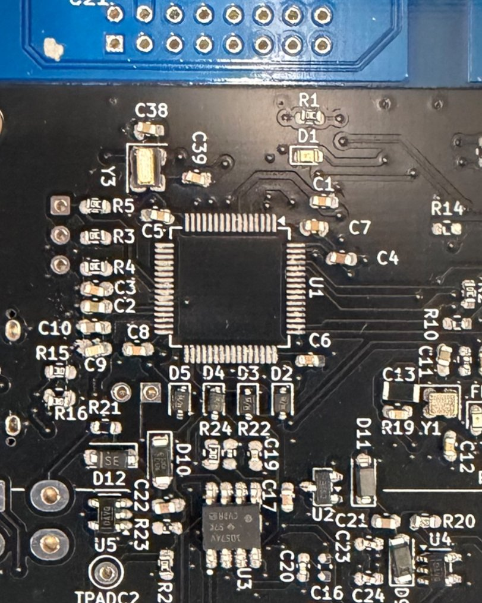

Career goals
Long-term goal
My long-term goal is to become a chip design engineer in the semiconductor industry. I am interested in the full process behind a chip: how circuits are designed, how the devices within them behave, and how a design becomes working silicon. I chose the Circuit Technology and Electronic Devices threads because together they cover that entire path.
My background is also well suited to this field. Much of the world's semiconductor manufacturing is based in Taiwan, Japan, and South Korea, and my ability to communicate in English, Japanese, Mandarin, and Korean would allow me to work effectively with teams across those regions.
Alongside my coursework and professional experience, I plan to continue building independent projects, each more ambitious than the last, with the goal of eventually creating something that is useful to others.

How I plan to get there
-
Research
Join a Vertically Integrated Project (VIP) team
Through Georgia Tech's VIP program, I want to gain realistic experience working toward a defined problem over multiple semesters and tackling it as part of a team, the same way engineers approach problems in industry and research.
-
Industry
Complete an internship
An internship will let me work alongside practicing engineers and gain a realistic view of what electrical engineers do day to day in the workforce, which will help me focus my coursework and career direction.
-
Solar Racing
Take on a core role on the team
Within Solar Racing, I hope to move toward the core systems of the car, taking ownership of work that many of the team's projects and tasks depend on. That level of responsibility is the kind of experience I want to bring to a future engineering role.